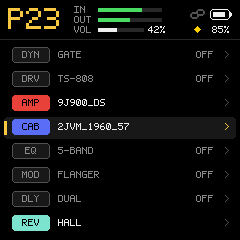
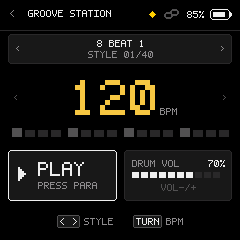

CUSTOM FIRMWARE · EARLY ACCESS
Onyx: new firmware for your amp modeler.
Open-source firmware for the M-VAVE / Donner amp modeler, with a rebuilt on-device interface, a full 8-block signal chain, an EQ editor, tuner and groove tools. Install it, back up your unit and go back to stock, all from your browser.
Install Onyx ↓ Open the Web Editor
What you get




Install from browser
This browser can't do it. Web MIDI with SysEx is needed: use desktop Chrome or Edge.
Always back up first. Installing writes to the unit's flash. Keep USB connected until it finishes.
- Connect the amp over USB and close any program holding its MIDI port.
- Backup: open the Web Editor, Firmware tab, and back up the critical regions of your unit.
- Install: click Use Onyx 1.19 (hosted on this site), then Install this firmware. The running firmware verifies the package, stages the loader, and the unit restarts.
- Verify: use Verify Flash for a byte-for-byte readback.
SHA-256 values are in SHA256SUMS. This is release 1.19, USB-only, with the radio disabled.
Before you plug in
- Desktop Chrome or Edge only (Web MIDI with SysEx).
- The unit should be on a charged battery.
- Return to the original firmware any time with Restore Factory Firmware in the Web Editor and your backup or the official vendor
.fwsc. - If a unit won't boot, the ROM download mode can't be disabled by bad firmware. See the recovery guide.